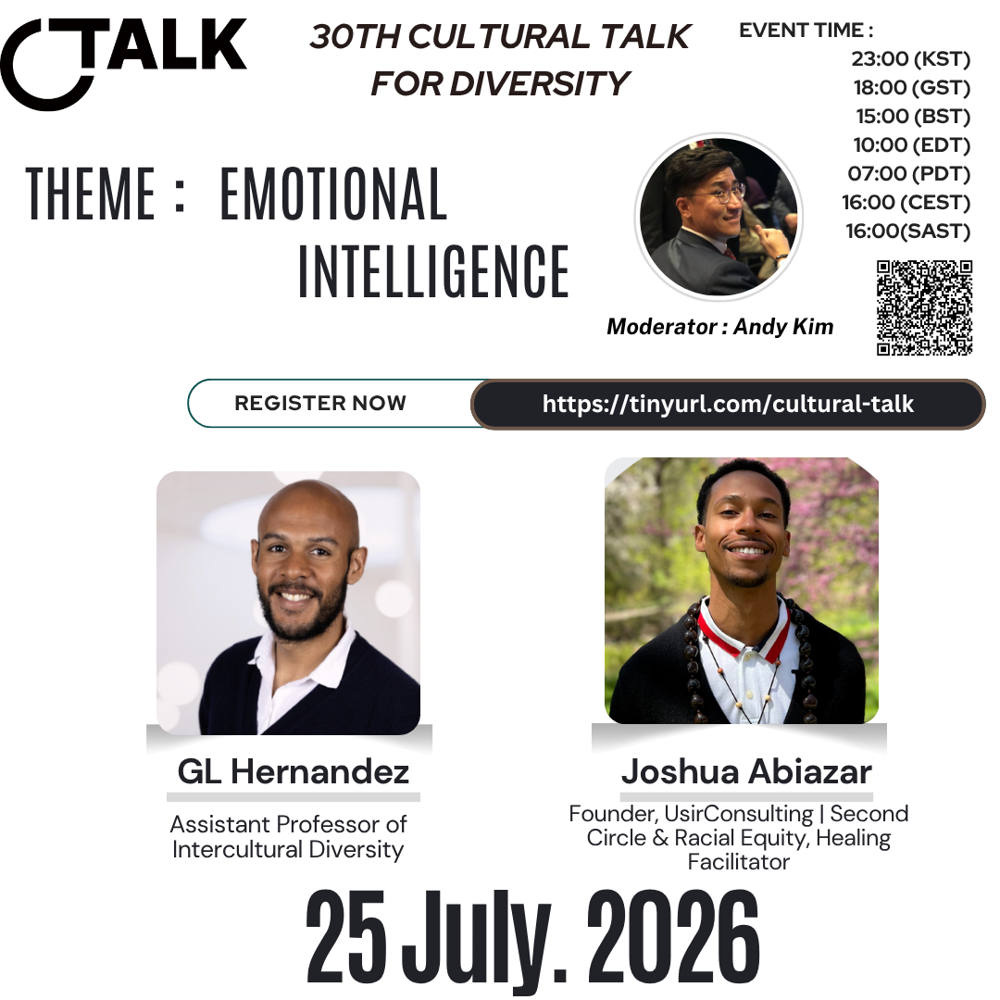
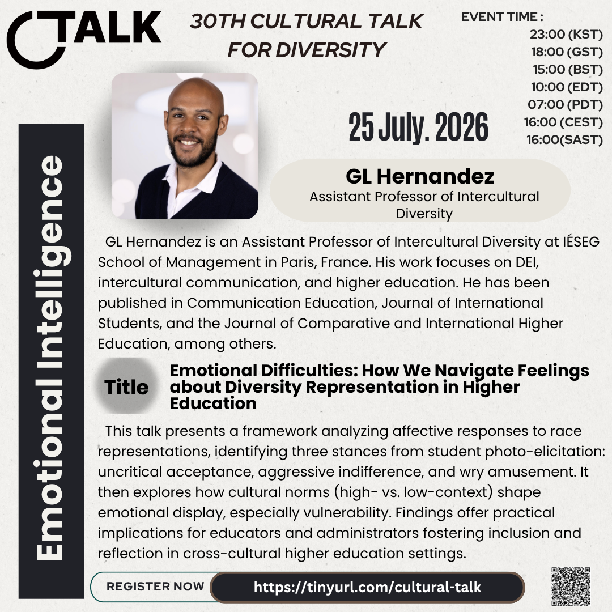
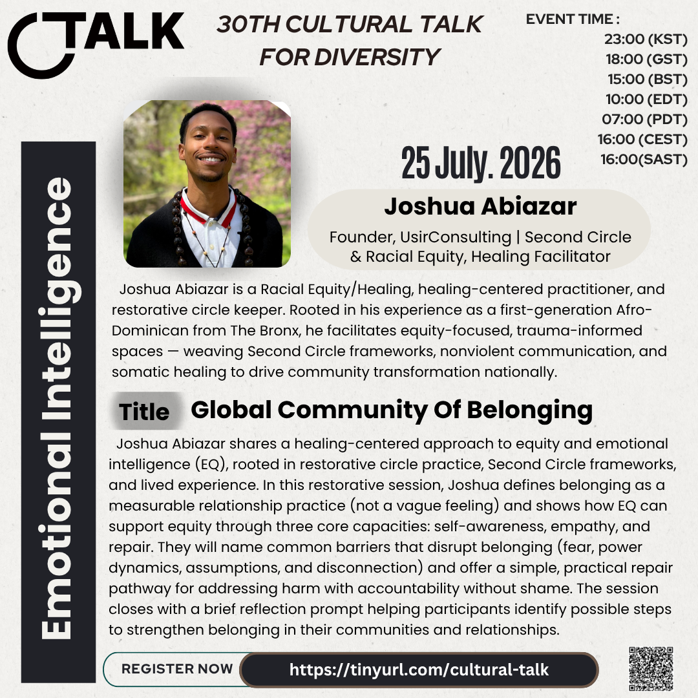

30th Cultural Talk For Diversity
Theme: Emotional Intelligence

Event Details
Date: 25 July 2026
Time: 23:00 (KST) / 18:00 (GST) / 15:00 (BST) / 10:00 (EDT) / 07:00 (PDT) / 16:00 (CEST) / 16:00 (SAST)
Conference Overview
The 30th Cultural Talk focuses on emotional intelligence as a way to understand how people notice, express, and work through difficult feelings in diverse communities. This session brings together perspectives from higher education, equity work, restorative practice, and healing-centered facilitation.
GL Hernandez will explore emotional responses to diversity representation in higher education, while Joshua Abiazar will share a healing-centered view of belonging, repair, and community transformation. Together, the talks invite a practical and reflective conversation about how emotional intelligence can support inclusion with honesty, care, and accountability.
Speaker Details
GL Hernandez

Role: Assistant Professor of Intercultural Diversity
Topic: Emotional Difficulties: How We Navigate Feelings about Diversity Representation in Higher Education
GL Hernandez is an Assistant Professor of Intercultural Diversity at IESEG School of Management in Paris, France. His work focuses on DEI, intercultural communication, and higher education, with publications in Communication Education, Journal of International Students, and the Journal of Comparative and International Higher Education.
His talk presents a framework for understanding affective responses to race representation, including uncritical acceptance, aggressive indifference, and wry amusement. It will also explore how cultural norms shape emotional display, especially vulnerability, and what this means for educators and administrators working toward more inclusive cross-cultural learning environments.
Joshua Abiazar

Role: Founder, UsirConsulting | Second Circle & Racial Equity, Healing Facilitator
Topic: Global Community Of Belonging
Joshua Abiazar is a racial equity and healing-centered practitioner, restorative circle keeper, and facilitator. Rooted in his experience as a first-generation Afro-Dominican from The Bronx, he creates equity-focused and trauma-informed spaces through Second Circle frameworks, nonviolent communication, and somatic healing.
His session will define belonging as a measurable relationship practice and show how emotional intelligence can support equity through self-awareness, empathy, and repair. Participants will reflect on common barriers to belonging and explore a practical repair pathway for addressing harm with accountability and without shame.
Related Coverage
No follow-up coverage has been linked yet. News, podcast, or other result links can be added here later after the conference.